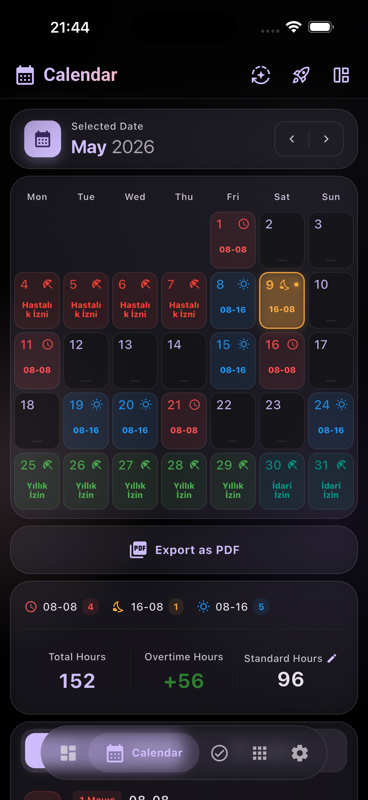
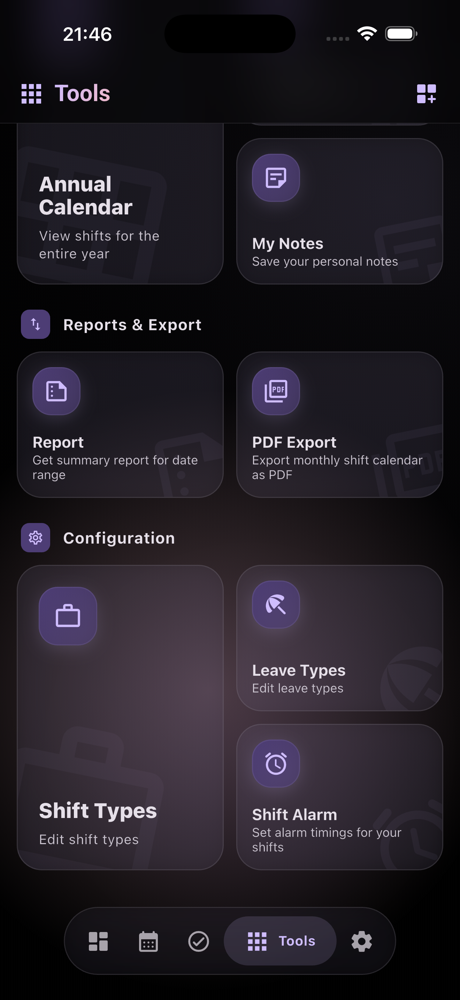
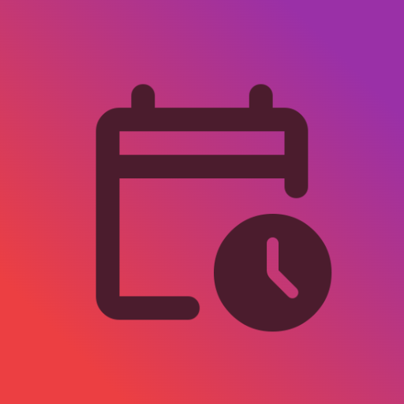

Vardiyanı planla,
hayatını organize et.
Vardiyalı çalışma düzenini kolayca planla, arkadaşlarınla paylaş ve sosyal hayatını organize et.
ShifLabs, vardiyalı çalışanlar için tasarlanmış kapsamlı bir vardiya yönetim uygulamasıdır. Vardiyalarını takip et, notlar ekle ve detaylı raporlar al.
Vardiyan için her şey tek yerde
Takvimden maaşa, görevlerden raporlara kadar vardiyalı hayatı kolaylaştıran araçlar.
Vardiya & İzin Takibi
Vardiyalarını ve izinlerini renkli takvimde takip et, özel notlar ekle.
PDF Rapor
Aylık vardiya ve mesai dökümünü tek dokunuşla resmi PDF olarak dışarı aktar.
Görev & Şablonlar
Günlük görevler ekle, tekrar eden nöbetler için pratik şablonlar oluştur.
Detaylı İstatistik
Çalışma saatlerini, gece mesailerini ve düzenini ayrıntılı grafiklerle izle.
Yedekle & Geri Yükle
Verilerini cihazında güvenle tut, cihaz değiştirsen bile verilerini kaybetme.
Reklamsız Erişim
Dikkat dağıtan can sıkıcı reklamlar olmadan tam, akıcı ve güvenilir bir deneyim.
Kazancını otomatik hesapla
Saat ücreti, gece zammı ve fazla mesai oranlarıyla net hakediş tablosu.
Her kuruşu hesaba kat
Saat ücreti, gece zammı, fazla mesai ve ek ödemeleri gir; ShifLabs vardiya takvimine göre aylık kazancını otomatik hesaplasın. Tahmin yapmayı bırak, net rakamı gör.
Uygulamadan görünümler
Özenle tasarlanmış arayüz ve sade kullanım deneyimi.




Vardiyanı ShifLabs'e bırak
Hemen indir, ilk vardiyanı ekle ve düzenini eline al.